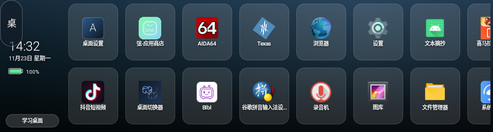
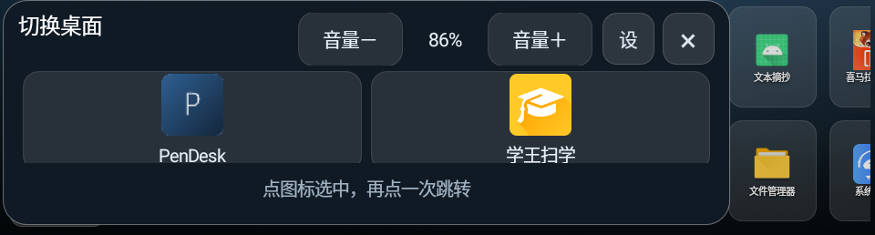
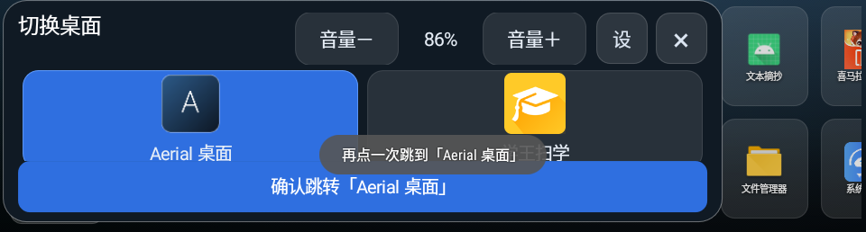
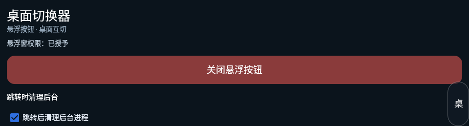
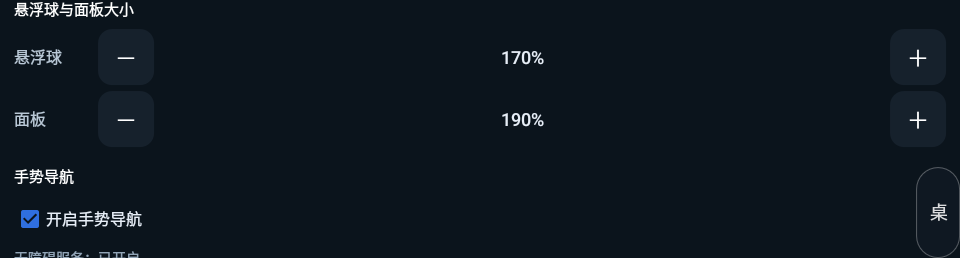
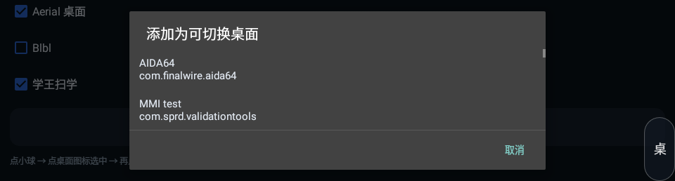
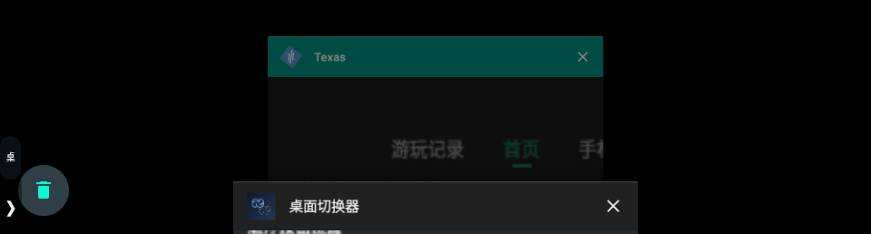

01BALL
先点一下球
球贴在屏幕边缘，不挡应用。点一下，面板从球的位置展开。
可拖动，松手自动吸附左右边贴边悬浮球，点开是桌面图标。选中，再点一次，才跳转——不会因为手抖切走你的桌面。悬浮球和面板还能分开调大小。


Interaction
点球、选桌面、再点一次确认。每一步都有明确反馈，点面板外就收起，不会误跳。
球贴在屏幕边缘，不挡应用。点一下，面板从球的位置展开。
可拖动，松手自动吸附左右边图标和名称一起放大。点中后高亮，底部出现确认提示，不直接跳。
点面板外，直接收起
提示「再点一次跳转「PenDesk」」。同一图标再点一次，才会切换。
手抖也不会切走Features
没有广告位，没有推荐流。只做桌面之间的那一层切换。
球可拖动，松手按中线自动吸到左或右边缘，位置持久化。贴边手势条会主动避开球所在区域。
第一次点击只选中并提示，第二次点击同一图标才跳转。减少误触，逻辑一眼就懂。
80%–200%，10% 一档。悬浮球和面板各有一套比例，互不牵连，小屏也能调到顺手。
左右边缘向内滑返回，底部上滑进最近任务。面板展开时手势自动暂停，不抢操作。
可选关闭、仅清理桌面、清理全部后台。API 23 非 root 下是尽力清理，系统签名桌面杀不掉。
面板底部「＋ 添加桌面应用」，从已安装应用里选任意 Activity 加入。长按条目可移除。



Settings
设置页不是一个摆设。悬浮球位置、两套缩放比例、手势开关、后台清理策略和桌面列表，都在一个可滚动页面里。
Gestures
手势条只有 9px，藏在屏幕最边缘。悬浮球所在的那一段会主动断开，球永远优先响应点按和拖动。

底部上滑后的系统最近任务 · 真机截图Install
不需要 root。API 23 没有 pm grant，悬浮窗权限用 appops 开；手势再单独开无障碍。
打开 USB 调试，确认 adb devices 能看到点读笔。
直接 adb install 可能报 “remote Is a directory”，用 push 再 pm install 更稳。
用 appops 放行 SYSTEM_ALERT_WINDOW，再打开桌面切换器。
勾选「开启手势导航」，到系统无障碍列表里打开「桌面切换器」。
# 1. 确认设备 adb devices # 2. 推送 APK 并安装 adb push desktop-switcher-1.7.3.apk /data/local/tmp/switcher.apk adb shell pm install -r /data/local/tmp/switcher.apk # 3. 授予悬浮窗（Android 6.0 / API 23） adb shell appops set aerial.pen.switcher SYSTEM_ALERT_WINDOW allow # 4. 打开设置页 adb shell am start -n aerial.pen.switcher/.MainActivity
Download
APK 和源码都在 GitHub。签名包直接装，源码用 Android Studio 打开即可编译。
给低分辨率安卓点读笔做的桌面切换器。MIT 许可，代码由豆老师编写。无广告、无收费、无强制更新。